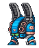
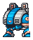
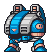
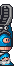
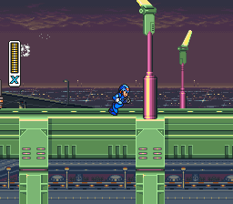
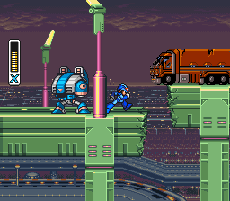
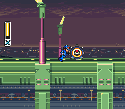
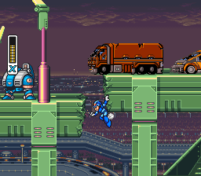

Zero-dependency capture. Prior stages needed a
pre-positioned Mesen savestate on disk. Central Highway comes first,
so we skipped the fixture step entirely:
highway_from_boot.lua
boots from the ROM, taps START on a 6/120-frame cadence for 1800 frames
(30 s) to clear the Capcom logo + title + demo sequence, then holds
RIGHT for 1800 frames to walk X into the Highway while dumping
OAM + VRAM + CGRAM every 10 frames and screenshots
every 60 frames. Two distinct enemy types surfaced in the slot trace;
both canonically identified on enemies_31592.png.
Confirmed matches
Pipeline verdicts use the same Jaccard thresholds as the other stages: STRONG ≥ 0.90, VERIFIED ≥ 0.70 (the reference-match gate), FLAGGED < 0.70. A 4×-scale side-by-side shows the OAM-composed extraction (left) vs the matching crop from the canonical sheet at the reported (x, y) (right).
highway_enemy_slot3 · b12=0x15 · palette row 4
VERIFIED 0.815
Small recurring enemy. Active frames 308–1593 (274 rows),
states {0, 2}. Only state 2 had an OAM cluster onscreen long
enough to produce a composite. FSM agreement 100% structural
(3 / 3 next-state predictions) · 100% frame-level
(274 / 274).
state 2 — J = 0.815 (normal orientation)
enemies_31592.png @ (101, 1153)- sheet
enemies_31592.png- position
- (101, 1153) normal
- Jaccard
- 0.815
- composite size
- 37×41
highway_enemy_slot5 · b12=0x29 · palette row 5
STRONG 0.928 on state 6
Larger multi-part enemy, 18–37 pal-5 OAM entries onscreen at
once. Active frames 419–1800 (738 rows), states {0, 2, 4, 6}.
All three captured states verified against the same canonical sheet.
First non-Launch-Octopus state to break into STRONG territory
(state 6, J = 0.928).
state 6 — J = 0.928 (STRONG)

enemies_31592.png @ (140, 808)- sheet
enemies_31592.png- position
- (140, 808) normal
- Jaccard
- 0.928
- composite size
- 57×70
state 2 — J = 0.897


enemies_31592.png @ (197, 745)- position
- (197, 745) normal
- Jaccard
- 0.897
- composite size
- 47×56
state 4 — J = 0.851

enemies_31592.png @ (81, 808)- position
- (81, 808) normal
- Jaccard
- 0.851
- composite size
- 18×70
Takeaways for the pipeline
-
Pipeline runs from cold boot with zero setup.
Previously each stage capture required a hand-authored
.msssavestate. For post-title stages the boot-and-mash approach works just as well and is portable to future stages that the Maverick stage-select navigator can reach viaenter_stage.lua. - STRONG match on the opening stage beats Chill Penguin. CP enemy candidates scored 0.77–0.87 because CP outline colors collide with snow/ice BG tiles, trimming a rim under CGRAM refinement. Central Highway's enemies use colors distinct from its BG palette — no rim loss, clean J=0.928 on state 6.
-
Both enemies land on
enemies_31592.png. Same canonical sheet, different (x, y) regions, different palette rows (4 vs 5). Sheet 31592 is now the canonical home for Launch Octopus (pal 4 frog) + both Highway enemies, making it the most-referenced sheet in the project so far. -
HP unknown for both. The capture schedule walks X
right without firing. Adding
SHOOT_EVERY>0would produce HP data via the same Lua run.
Recon screenshots
A few frames along the walk. Frame numbers are relative to the end of the intro-skip window (the walk-right phase, not absolute emulator frame).




Canonical reference sheet
Both Highway enemies live on sheet 31592. Click to open full.